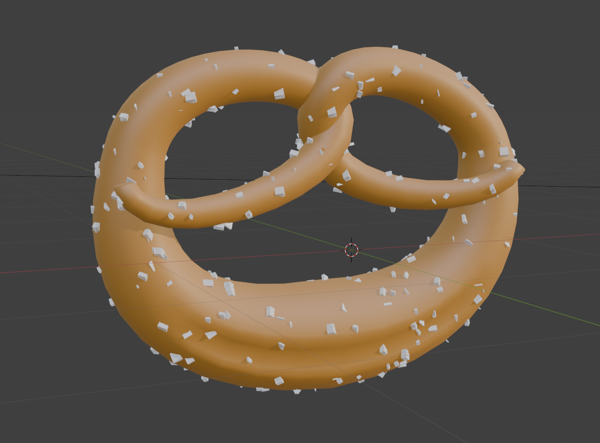
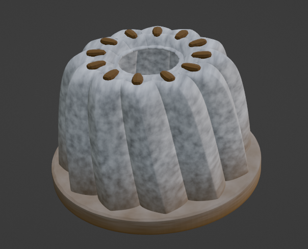
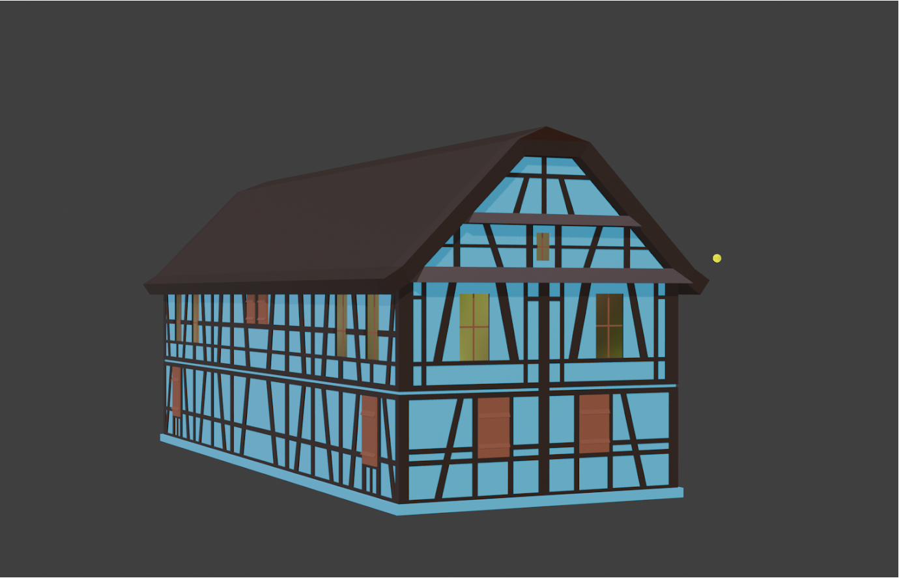

Les Dominicains de Haute-Alsace
Les Dominicains de Haute-Alsace est une structure qui propose des spectacles, des concerts et des installations numériques sur place.
En tant qu'assistant audiovisuel, mes missions consistaient principalement à réaliser tout ce qui touche à la 3D (modélisation, animation, texturing, lumières...).
Tous les projets en 3D ont été réalisés sur Blender et intégrés par la suite dans After Effects.
Les D'Rhinwagges
Les D'Rhinwagges est un groupe de musique traditionelle alsacienne. Leur troupe venait en concert chez les Dominicains.
J'avais la responsabilité de faire des modèles 3D et des petites animations sur le thème de l'alsace.
Les animations ont été vidéo projetées en arrière plan pendant le concert.




Crédit Photo : Michel Kurst

Crédit Photo : Michel Kurst
Manala Dada
Dans le cadre de la 16ème édition du Noël bleu de la ville de Guebwiller, nous avons réalisé un vidéo mapping sur le thème des Manalas.
J'étais en charge de la création, de l'animation et de l'intégration des modèles 3D dans le mapping.
Les éléments 3D ont été conçus en tenant compte de l'espace et de l'architecture du lieu.
Songe en Technicolor
J'ai assisté à la création de "Songe en Technicolor", une projection immersive à 360 degrés.
J'ai réalisé des éléments et des scènes en 3D, qui ont été intégrés à la projection finale.